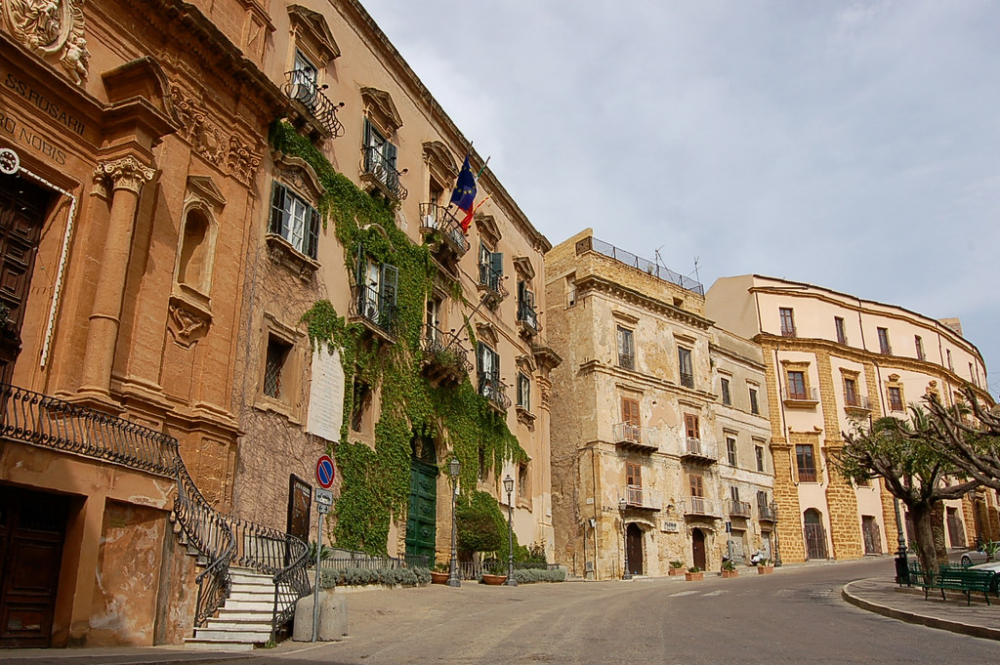

Piazza Luigi Pirandello
Provincia di Agrigento

Contesto Urbano ed Evoluzione
Incastonata nella parte alta della città, all'ingresso della storica Via Atenea, Piazza Luigi Pirandello costituisce il centro civile e amministrativo di Agrigento. La scelta di inserire questa piazza nell'archivio risiede nella sua capacità di raccontare la storia urbana medievale e moderna della città, ponendosi come il nucleo identitario della cittadinanza agrigentina contemporanea.
Lo spazio ha una forma allungata e protetta, quasi un corridoio monumentale su cui si affacciano le principali sedi locali. L'elemento architettonico preminente è il Palazzo dei Giganti, un imponente ex convento del XVII secolo oggi adibito a Municipio, che nasconde al suo interno lo splendido e omonimo Teatro Luigi Pirandello. Accanto ad esso sorge la settecentesca Chiesa di San Domenico.
Dal punto di vista sociale, la piazza è lo snodo vitale che collega la città moderna all'intricato labirinto del centro storico di impianto arabo, funzionando come baricentro istituzionale.